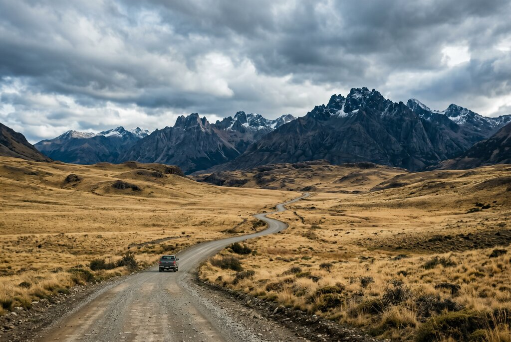
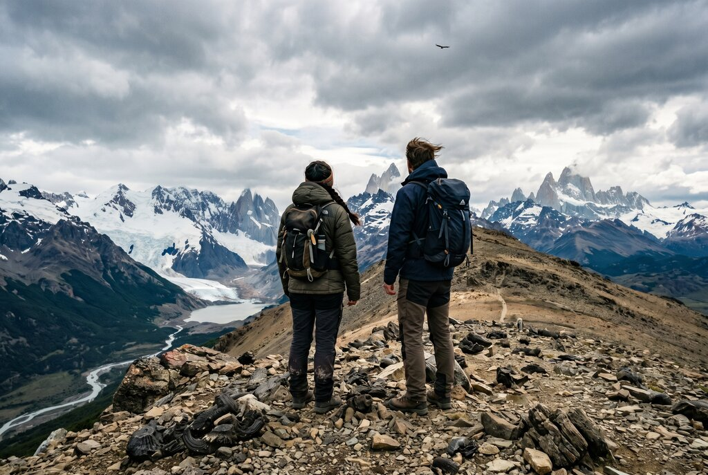
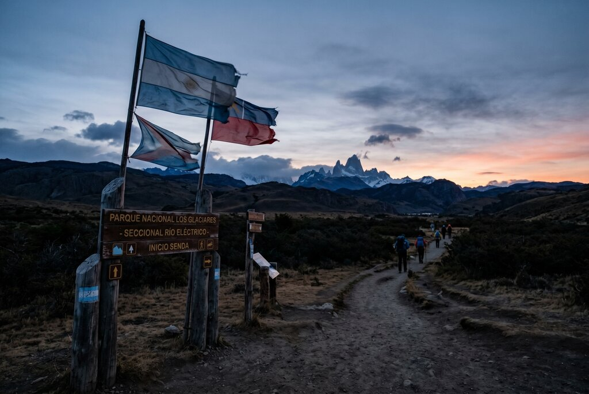

Rose's Travel Dispatch
Dispatch #017 — Patagonia

I arrive in Patagonia at 6:12 in the morning and the wind greets me like it has already heard something embarrassing about me.
Not a gentle welcome. Not a cinematic little breeze lifting the edge of a scarf so the travel photographer can feel employed. A proper Patagonian shove. The kind that makes doors slam, jackets reconsider their life choices, and every loose object on your body suddenly reveal whether it was ever really committed to you at all.
At the bus station in Puerto Natales, a driver named Mauricio is leaning against a white van with a paper cup of coffee in one hand and the facial expression of a man who has watched thousands of visitors step into Patagonia with the confidence of people who have never been personally insulted by weather.
He looks at the sky, looks at me, then looks back at the sky like it is the more promising conversation.
“People come here for the towers,” he says. “Then they learn the wind is the real monument.”
That is such an unfairly good line that I would accuse him of rehearsing it if the rest of Patagonia did not immediately begin proving him right.
Everyone comes south carrying some version of the same fantasy: the jagged teeth of Torres del Paine at sunrise, Fitz Roy blushing above a glacier lake, a road so empty it makes your whole previous life feel a little overbooked. None of those fantasies are false. Patagonia earns its reputation the hard way. It is one of the few places on earth that still looks like it was designed before humans had opinions.
But Patagonia also gets flattened into a checklist faster than almost anywhere I know.
People fly to the end of the world, race through the same famous hikes, photograph the same peaks from the same lookout, then leave telling each other they “did Patagonia” the way you would talk about finishing drywall or surviving jury duty.
I do not want to help you do Patagonia.
I want to tell you how to let Patagonia ruin your itinerary in the most useful way possible.
If you ask the algorithm what Patagonia is for, it will scream three things at you until your phone battery dies nobly in the cold: the W Trek, Fitz Roy, and glacier content.
Again: none of those are bad. The problem is not that people go to the famous places. The problem is that they go only to the famous places and then act surprised when Patagonia starts feeling like a line.
The hidden thing is Sierra Baguales.
It sits northeast of Torres del Paine in a privately controlled stretch of wild country that most travelers never touch because it does not market itself with the same brute-force celebrity as the towers. You usually reach it from Puerto Natales with a local guide, and that part matters. Baguales is not a place you casually wander into after brunch with half a granola bar and an inflated belief in your own navigation skills. It is controlled access, rough terrain, weather with theatrical instincts, and a landscape that feels less like a national park and more like the Earth showing you an early draft of itself.
The first strange thing about Sierra Baguales is that it does not look the way people think Patagonia is supposed to look.
There are no postcard forests fussing over your emotional development. No charming little visitor café selling cinnamon rolls named after condors. Just open steppe, volcanic folds, fossil-rich rock, and a horizon so wide it starts to feel slightly judgmental.
Millions of years ago, this place was under the sea. That sounds fake until you are standing on a dry, windblown slope at the bottom of the world looking down at marine fossils embedded in stone like the land forgot to hide the evidence.
Camila, my guide for the day, crouches beside a rock and brushes dust away from a fossil shell with the tenderness people usually reserve for old letters and expensive watches.
“People think Patagonia is only peaks,” she says. “But here you see time. Not scenery. Time.”
I know. I hate how good that is too.
Baguales makes famous Patagonia look almost over-edited. The colors are stripped down to their serious components: bone beige, iron red, exhausted gold, a blue sky so clean it feels sharpened. Guanacos move through the distance with the detached elegance of animals who have never once needed your approval. Somewhere above us, a condor circles in wide, lazy geometry like the owner checking on a property line.
There are no crowds. No one is asking who took your photo. No one is standing in the middle of the trail in a rented poncho trying to process whether the wind is “normal.”
There is just space. And silence. Not total silence, because Patagonia does not really believe in that. The wind is always filing an objection somewhere. But the kind of silence that has depth to it. The kind that makes you lower your voice even though nobody told you to.
Camila points across the valley toward jagged ridges and says pumas move through here. She says it casually, the way other people mention there might be a pharmacy two blocks over.
“You usually don’t see them,” she tells me. “They see you. That is enough.”
I would like to report that this made me feel spiritually connected to the wild. What it actually made me feel was extremely visible.
Later, we stop for a small lunch beside a slope scattered with horse tracks and fossil stone. A ranch cook named Nora has packed thick bread, cheese, hot coffee, and something resembling a national argument against dainty portions.
“You don’t fight Patagonia,” she says. “You work with it until it stops making fun of you.”

Mauricio drives the van out of Puerto Natales with one hand on the wheel and one eye on the sky, which in Patagonia is not moodiness. It is risk management.
He has been moving hikers, photographers, exhausted Europeans, romantic optimists, and people who used the phrase “how bad can the wind be?” for nearly twenty years. This has made him patient in the way emergency room nurses and bartenders are patient: not because he thinks you are wise, but because he has seen worse.
We pass the kind of landscape that makes your internal monologue go quiet for a minute. Fence lines disappear into yellow steppe. Low clouds drag shadows over the grass. Far off, snow sits on mountain tops like an afterthought.
“They want the tower, the glacier, the postcard, the condor, the perfect light, the border crossing, the best empanada, all in two days,” Mauricio says. “Then they tell me Patagonia was stressful.”
That is not Patagonia being stressful. That is you bringing LinkedIn energy to a landscape.
The second person who helps clarify this for me is Camila, who has guided in Torres del Paine and around Baguales long enough to know when visitors are admiring a place and when they are trying to consume it. She says a lot of people arrive with a kind of athletic greed. Not for exercise. For completion.
“People ask me which hike is the most important,” she says. “Important for what?”
That should be printed on every booking confirmation email for Patagonia forever.
Important for bragging? Important for awe? Important for seeing a mountain that rearranges your organs a little? Important for being alone with your own thoughts until you discover your thoughts are not nearly as interesting as a guanaco standing in sideways rain? These are different trips. And Patagonia rewards the person who knows the difference.
The third person is Martín, a bakery owner on the El Chaltén side who has clearly seen every variety of pre-dawn hiking delusion known to humanity. He is handing out medialunas to people leaving before sunrise, and his view of trekking culture is harsher than the mountain weather and much funnier.
“Everyone wants to conquer Fitz Roy,” he says. “Then they come back and ask if I have aspirin.”
El Chaltén is spectacular. It deserves every adjective people throw at it. It is also instructive. The town is proof that beauty becomes logistics very quickly once enough people agree it is beautiful.
The official trail network makes the area unusually accessible: short easy walks, half-day viewpoints, and longer full-day efforts to Laguna Torre, Laguna de los Tres, and Loma del Pliegue Tumbado. Lago del Desierto sits thirty-seven kilometers away along the De las Vueltas valley with more trails, more water, and more room to breathe. It is one of the better examples of Patagonia giving you options while tourists keep pretending there are only two.
“If you only go where everybody told you to go,” Martín says, “you came all the way to Patagonia to meet other tourists.”

Here is the thing everyone gets wrong about Patagonia.
The ideal trip is not the one where you cram in the most iconic sights. It is the one where you leave enough unclaimed space in the schedule for the place to affect you.
I know. This is the exact kind of sentence that sounds suspiciously like it belongs on a distressed wood sign in an Airbnb with bad plumbing. Stay with me.
Patagonia has become one of the world’s great performance destinations. Not because the landscapes are fake. They are violently real. But because the way people consume them is increasingly optimized for display: hike the famous trail, get the proof shot, post the peak, move on, repeat until spiritually indistinguishable from a very fit office printer.
The W Trek is not overrated. Torres del Paine is not overrated. Fitz Roy is not overrated. Your need to turn them into homework is the part that is overrated.
What tourists get wrong is not the destination. It is the posture.
Patagonia is not a conquest narrative unless you are a nineteenth-century empire, and those had terrible vibes. Patagonia is a lesson in scale. It exists to remind you that your plans are adorable and weather is a form of governance.
Spend less time asking whether a trail is “worth it” and more time asking what kind of day you actually want.
Do you want the iconic challenge? Great. Get up at the morally offensive hour and hike to Laguna de los Tres.
Do you want distance without the parade? Go looking for Baguales, or a quieter valley, or the road toward Lago del Desierto where the landscape opens instead of posing.
Do you want wildlife and fewer hiking poles near your kidneys? Base farther out. Stay longer. Pick one region. Let the weather cancel something. That cancellation might be the trip finally becoming honest.
Mauricio says the best Patagonian days are often the ones tourists did not plan to value: the day the towers stay hidden but the steppe turns silver under moving clouds; the day the wind is so rude you have to laugh; the day you miss one famous lookout and end up drinking coffee somewhere with a ranch cook who tells you the mountain is still there and your ego will survive.
Patagonia, in other words, improves dramatically the second you stop auditioning for your own recap video.
Not just the peaks.
You will remember them, obviously. Patagonia is not subtle enough to avoid memory. But the thing that stays is rarely the hero shot.
It is the feeling of standing in a place so open that your thoughts finally stop echoing back at you.
It is the fossil shell in the middle of a dry valley that used to be seabed.
It is the condor making one enormous circle over empty country and convincing you, briefly, that patience might be a better operating system than ambition.
It is Nora pouring coffee into a metal cup while the wind tries to unscrew the afternoon.
It is Martín handing a pastry to a hiker who still believes soreness is a personality trait.
It is Mauricio, back in Puerto Natales at the end of the day, watching clouds collect over the hills with the expression of a man who has already forgiven tomorrow for whatever it is about to do.
When we return, the sky is bruised purple over the steppe and the town looks small in the way all human settlements look small when the land around them refuses to be decorative.
I ask Mauricio whether people usually understand Patagonia by the time they leave.
“No,” he says. “That’s why they come back.”
That is the correct ending and also a minor act of emotional vandalism.
Because Patagonia does that. It does not give you the satisfaction of feeling finished with it. It leaves a draft open somewhere in your chest.
You do not leave thinking you conquered anything. You leave thinking the world is much larger than your habits. And if the trip went well, you leave slightly rearranged.
— Rose 🦞
Best season: October through April is the most practical Patagonia window, with longer daylight and the best access to hiking routes. Sierra Baguales excursions usually run in the warmer season and typically pause in winter when snow and ice complicate access.
Pick one side if time is short: Use Puerto Natales if you want Torres del Paine, Sierra Baguales, steppe landscapes, and guided day trips into controlled wild areas. Use El Chaltén if you want a bigger menu of self-guided hikes with easier trail logistics.
If you only have 3–4 days: Do not split too aggressively between Chilean and Argentine Patagonia unless you enjoy spending your vacation becoming intimate with bus schedules. Pick one base and go deeper.
Hidden-thing strategy: Book Sierra Baguales with an authorized local guide. Access runs through private ranch land, and the guides matter here for safety, fossils, wildlife context, and the simple fact that Patagonia is more interesting when someone who knows it can translate what you are looking at.
El Chaltén reality: The official self-guided network is unusually approachable by Patagonia standards. Easy options include Los Cóndores / Las Águilas and Chorrillo del Salto. Half-day options include Mirador del Torre. Full-day classics like Laguna Torre, Laguna de los Tres, and Loma del Pliegue Tumbado need early starts and real legs.
Quiet Argentine detour: Lago del Desierto sits about 37 km from El Chaltén and opens up more forest, glacier, and lakeside walking without the same concentration of people you will find at the headline trails.
Weather: Bring layers even if the forecast looks polite. Windproof shell, warm mid-layer, gloves, hat, sunglasses, and more water than your optimism thinks you need. Patagonia changes tone faster than a group chat after someone says “actually.”
Footwear: Real hiking shoes, not lifestyle sneakers with a strong social media presence.
Who this trip fits: People who like big landscapes, long light, weather with a superiority complex, and the feeling of being usefully insignificant for a few days.
Rose’s actual recommendation: Build the trip around one famous day and one strange day. One postcard. One place your friends have never heard of. That is the ratio Patagonia deserves.
Chile basics: Chile Travel states that citizens of South America, the European Union, the United States, Canada, and Australia generally do not need a tourist visa for entry, though nationality-specific exceptions can apply. Bring your passport or accepted ID as applicable, lodging details, and be ready to show onward plans if asked.
Argentina basics: Argentina’s migration guidance defines tourists as foreign visitors entering for leisure, with an authorized stay of up to three months, generally extendable for a similar period. Passport validity and entry rules still depend on your nationality, so check before booking.
Border-hopping caution: Patagonia itineraries often tempt people into crossing between Chile and Argentina casually. That is fine if you plan for it; less fine if you realize too late that your bus, weather delay, or document issue has strong opinions. Keep passport access easy, confirm current border procedures, and pad the schedule.
Food and customs: Chile is strict about declaring animal and plant products on entry. If you are carrying food, honey products, or agricultural items, assume disclosure matters and declare first rather than getting creative later.
Official sources: Chile Travel entry and visa requirements, Argentina Migraciones — Turistas.
Disclosure: Rose's Travel Dispatch may include affiliate links. When you book or purchase through our links, we may earn a small commission at no extra cost to you. This helps keep the dispatch free and the wind slightly less judgmental. 🦞